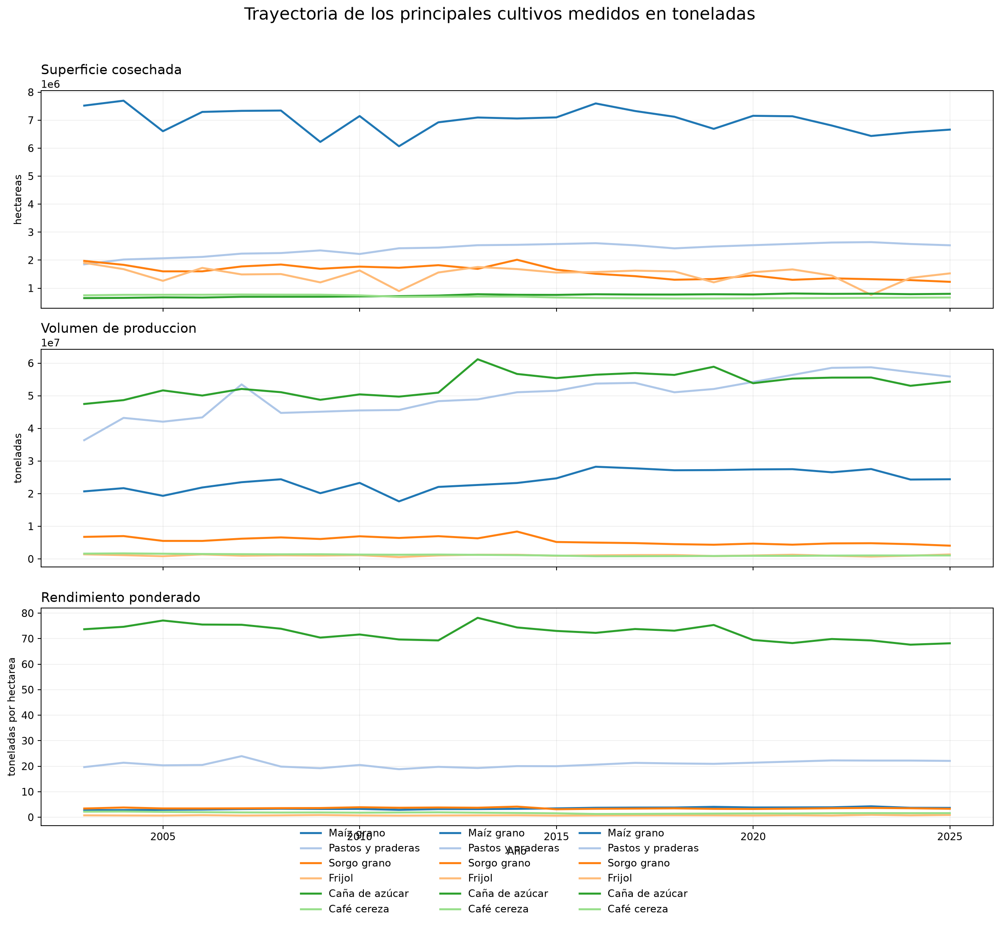

06 · El territorio cambia con el tiempo y el ciclo
El cultivo dominante no es una fotografía fija
La animación anual revela regiones persistentes; la vista por ciclos muestra que Otoño–Invierno, Primavera–Verano y Perennes ocupan geografías distintas.

07 · Correlación como mapa de preguntas
Las relaciones fuertes no siempre son descubrimientos
Superficie sembrada y cosechada comparten definición; producción y valor también. La matriz ayuda a detectar estructura, pero no demuestra causalidad.
Por eso se añadieron matrices seleccionables por cultivo y asociaciones mixtas para variables edafológicas categóricas.

08 · Rendimiento, estabilidad y riesgo
Producir más no significa producir de forma estable
El coeficiente de variación distingue municipios consistentes de municipios volátiles. Los siniestros y anomalías climáticas aportan otra lectura del riesgo.

